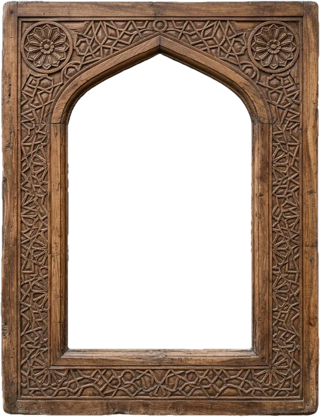
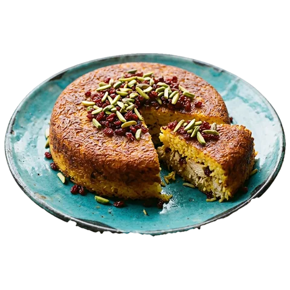
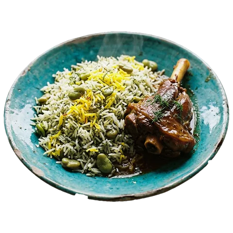
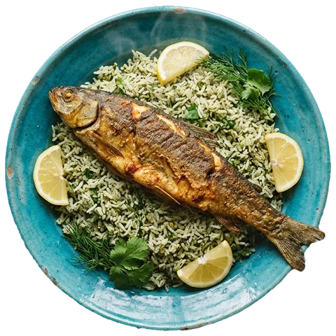
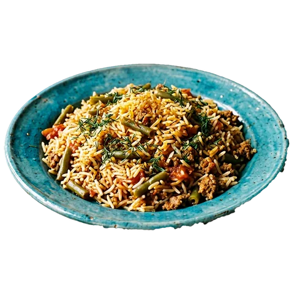
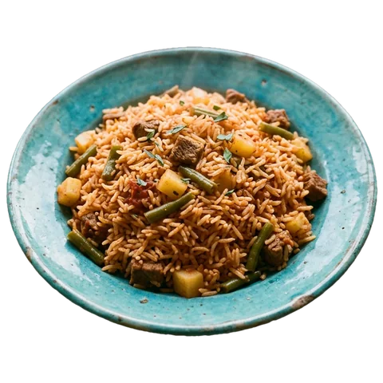
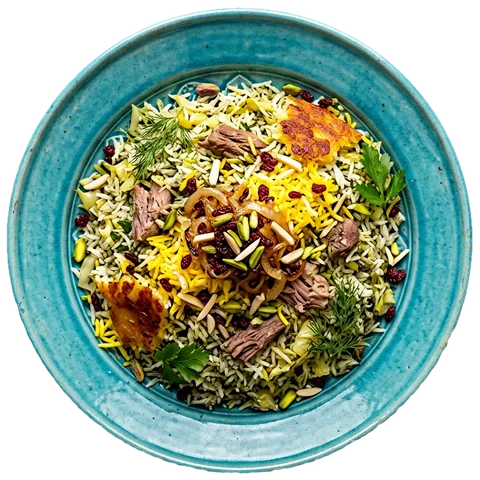
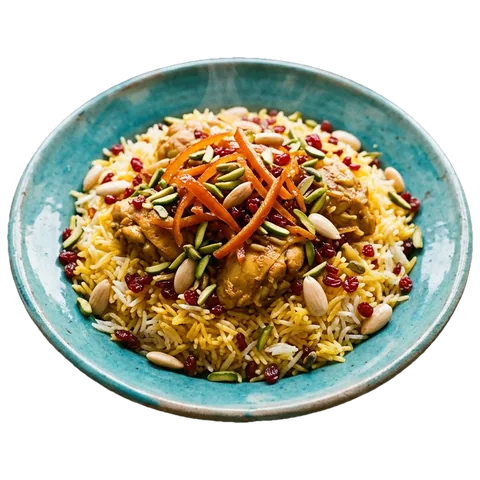

چلوکباب سلطانی
۸۹۰٬۰۰۰ تومانیک سیخ برگِ راسته و یک سیخ کوبیدهی دستپیچ بر چلوی زعفرانی، با گوجهی کبابی، ریحان و سماق.
منوی ترنج
کبابهای زغالی خانه؛ از سلطانی تا شیشلیک. قیمتها به تومان است.

یک سیخ برگِ راسته و یک سیخ کوبیدهی دستپیچ بر چلوی زعفرانی، با گوجهی کبابی، ریحان و سماق.

دو سیخ کوبیدهی گوشت گوسفندی ورزیده با پیاز و نمکِ دریا، بر چلوی کرهدار با گوجهی کبابی و سماق.

برگههای نازکِ راستهی گوساله، خوابیده در پیاز و زعفران، بر چلوی دودی با کرهی محلی.

همآوایی کباب برگ و جوجهی زعفرانی بر یک سیخ، بر چلوی زعفرانی با گوجهی کبابی.

دندههای برهی شیرده، آرامپخت و زغالیشده با زعفران و کره، همراه چلو و سماقِ تازه.

کبابِ یکتکه و بزرگ گوشت چرخکردهی گوسفندی به سبک بُناب، آبدار و زغالی، با پیاز و سماق.

کوبیدهی مرقدار در ربِ انار و گردو و سبزی معطر، سرخشده بر تابهی مسی با کتهی شمالی.

تکههای فیلهی گوساله در مرقدِ زعفران و لیمو، سیخشده بر آتشِ ملایمِ زغال.

تکههای مرغ خوابیده در دوغ و زعفران، کبابشده بر زغال با گوجه و لیموی کبابی.
منوی ترنج
خورشهای جاافتاده با سبزیِ معطر و ربِ انار. قیمتها به تومان است.

سبزیِ معطر سرخشده با لوبیا قرمز و لیموعمانی، جاافتاده بر شعلهی ملایم؛ همراه چلو و سالاد شیرازی.

خورشتِ لپه و گوشت با لیموعمانی و زعفران، تاجگذاریشده با خلال سیبزمینی سرخکرده.

گردوی ساییده و ربِ انارِ ترشوشیرین با مرغِ محلی؛ آراسته با دانهی انارِ شبیلدا و مغز گردو.

قیمهی خلالدارِ قزوینی با خلالِ پسته و بادام و پرتقالِ شیرین، تاجگذاریشده با گوشت و زرشک.

تکههای بِه طلایی و رانِ مرغ در سسِ غلیظ زعفران و دارچین، جاافتاده بر آرامِ شعله.

ساقههای کرفس و تکههای گوشت با سبزی خردشده، در سسی ترش و خوشعطرِ جاافتاده.

اسفناج تازه و آلوی شیرازی با تکههای گوشت، در سسی تیره و براقِ جاافتاده.

خورشِ ماهی و سبزیِ جنوب با تمر هندی و سیر؛ تند و دودی، با پلوی سفید.
منوی ترنج
پلوهای دمی و زعفرانی با تهدیگِ طلایی. قیمتها به تومان است.

رانِ مرغِ خورشتی با پیازداغِ طلایی، کنار پلوی زعفرانی با زرشکِ پفکرده و پستهی خلالی.

برنجِ زعفرانی با ماستِ چکیده و مرغِ ریششده، قالبگیریشده با تهدیگِ طلایی؛ با زرشک و پسته.

شوید و باقالی در برنجِ دمی، با ماهیچهی بره براق که از استخوان جدا میشود.

برنجِ معطر با سبزیِ تازه و ماهیِ سفیدِ سرخشده؛ سفرهی نوروزیِ خانه.

برنج با آلبالوی ترش و مرغِ زعفرانی؛ ترشوشیرینِ دلپذیر با خلال پسته.

برنج دمکرده با عدس و کشمشِ پلویی و خرما، پیازداغِ فراوان و زیره؛ یادگارِ سفرهی مادرها.

لوبیا سبز و گوشت چرخکرده در سسِ ربِ گوجه و سبزی معطر، دمشده با برنجِ خوشدانه.

برنج دمشده با گوجهی تازه، سیبزمینی نگینی و لوبیا سبز؛ خوشعطر، خانگی و آشنا.

کلمبرگِ خلالشده با سبزی معطرِ شیرازی و تکههای گوشت، دمشده با برنج و زیره.

برنج زعفرانی با هویجِ خلالشدهی شیرین، خلالِ پسته و بادام و زرشک، همراه رانِ مرغ.
منوی ترنج
دیزی، کشک بادمجان و آشهای خانگی. قیمتها به تومان است.
منوی ترنج
نان تنوری، ترشی، دوغ و مخلفاتِ سفره. قیمتها به تومان است.
منوی ترنج
از چایِ دمکشیده تا قلیانهای سرداب؛ قیمتها به تومان است.
منوی ترنج
همهٔ گروههای سفرهی خانه، بههمراه کنارِ سفره؛ قیمتها به تومان.